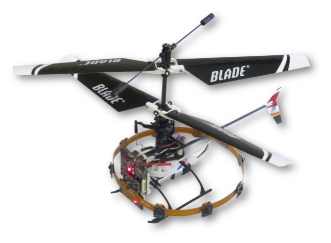

| Optic Flow Control of Mico-Aerial Vehicle |
Sept 2012 - Feb 2013 |
I completed the work for my master's project in Radhika Napal's Self-Organizing Systems Research Group
at Harvard University. I worked on vision-based control of a 30 gram
autonomous micro-aerial vehicle (MAV). We used specialized vision sensors to estimate the optic flow around the
helicopter. This information is then used to control the aircraft and ultimately for
more complex tasks such as egomotion estimation, mapping, and coordination.
We investigated strategies for indoor navigation with fully on-board computation.
In order to test various sensor configurations
and control strategies, I created a 3-dimensional simulation of the MAV and
sensor ring using the Webots robotics simulator, along with a custom physics plugin.
|

micro-aerial vehicle with custom sensor ring
|
|
Dr. Karthik Dantu, Dr. Richard Moore, Dr. Radhika Nagpal (faculty), Dr. Dario Floreano (faculty) |